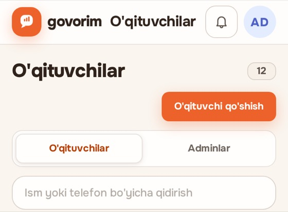
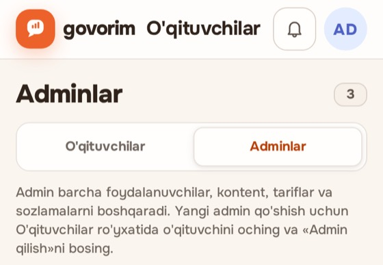
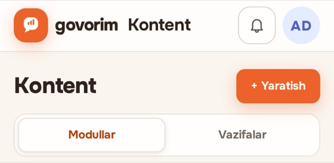

Admin — platforma egasi. Siz o‘qituvchilarni qo‘shasiz, umumiy (rasmiy) darslarni yaratasiz va hisoblarni boshqarasiz. Admin huquqi eng yuqori huquq — uni faqat ishonchli odamga bering.
Akkauntlar uch xil yo‘l bilan paydo bo‘ladi. Hech kimga parol berilmaydi — hamma telefon raqami va Telegram kodi bilan kiradi.
Admin menyusi: Boshqaruv · O‘qituvchilar · O‘quvchilar · Kontent · Tariflar · Sozlamalar. Telefonda ikkitasi qisqa yoziladi: «Bosh» va «Ustozlar». Profilingiz va Chiqish — yuqoridagi doiracha (avatar) orqali.
Yangi platformada hech narsa yo‘q: dars ham, o‘qituvchi ham. Shu tartibda bajaring:


O‘quvchilarni admin qo‘shmaydi — ular o‘zlari ro‘yxatdan o‘tadi. Siz O‘quvchilar va O‘qituvchilar bo‘limlarida ism yoki telefon bo‘yicha qidirib, Boshqarish ni bosasiz:
| Tugma | Nima qiladi |
|---|---|
| Ismni saqlash | Ismni tuzatish. |
| Faol hisob (kalit) | O‘chirsangiz, odam tizimga kira olmaydi. Qaytarsa bo‘ladi — qayta yoqsangiz, hammasi joyida. |
| Premium (faqat o‘quvchida) | Barcha pullik vazifalarni ochadi yoki yopadi. To‘lov bilan bog‘liq emas. |
| O‘qituvchiga aylantirish | O‘quvchini o‘qituvchi qiladi. |
| O‘quvchiga aylantirish | O‘qituvchini o‘quvchi qiladi (guruhlari bo‘lsa — bo‘lmaydi). |
| Hisobni o‘chirish | Butunlay o‘chiradi. Ortga qaytarib bo‘lmaydi. |
| Faolsizlantirish | O‘chirish | |
|---|---|---|
| Qaytarsa bo‘ladimi | Ha | Yo‘q |
| Javoblar, baholar, XP | Saqlanadi | Butunlay o‘chadi |
| O‘qituvchining guruh va vazifalari | Saqlanadi | Butunlay o‘chadi |
Rasmiy modulni har bir o‘quvchi ko‘radi — guruhi bo‘lmasa ham. Har bir rasmiy modulning dastlabki 3 ta vazifasi bepul, qolganlari Premium.

Vazifalar tartibi muhim: birinchi 3 tasi bepul. Ichida nashr qilingan vazifasi yo‘q modulni o‘quvchilar ko‘rmaydi.
Tariflar: onlayn to‘lov hali ulanmagan — sahifada «Provayder: ulanmagan» deb yozilgan. Premiumni hozircha O‘quvchilar → Boshqarish → Premium orqali berasiz.
U siz qo‘shgan raqamdan boshqa raqam bilan kirgan va tizim uni yangi o‘quvchi deb ro‘yxatdan o‘tkazgan. O‘sha hisobni O‘quvchilar da toping → Boshqarish → O‘qituvchiga aylantirish (yoki ortiqcha hisobni o‘chiring).
Boshqarish → Faol hisob kalitini o‘chiring. U kira olmaydi, guruh va vazifalari saqlanadi. Keyin qaytarsa ham bo‘ladi.
«Bu o‘qituvchida N ta guruh bor» — guruhi bor o‘qituvchini o‘quvchiga aylantirib bo‘lmaydi. Kirishini to‘xtatmoqchi bo‘lsangiz — faolsizlantiring.
Platformada kamida bitta admin qolishi shart. O‘z rolingizni boshqa admin o‘zgartiradi.
Boshqarish → ismni tuzating → Ismni saqlash.
O‘quvchilar → uni toping → Boshqarish → Hisobni o‘chirish → ismini yozib tasdiqlang. Barcha javoblari butunlay o‘chadi.
O‘quvchilar → Boshqarish → Premium kalitini yoqing. O‘qituvchisi ham o‘z o‘quvchisiga bera oladi.
Nashr qilingan rasmiy modul yo‘q, yoki modul ichida nashr qilingan vazifa yo‘q. Kontent da modulni oching va Nashr qilish ni bosing.
Sozlamalar → AI baholash → «Hozir ishlayapti» belgisini tekshiring. Kunlik AI byudjeti tugagan bo‘lishi ham mumkin. Hal bo‘lmasa — texnik mutaxassisga ayting.
Rasmiy (siz yaratgan) — hamma o‘quvchiga ko‘rinadi, birinchi 3 vazifadan keyin Premium. O‘qituvchi moduli — faqat o‘sha o‘qituvchining guruhlariga, to‘liq bepul.